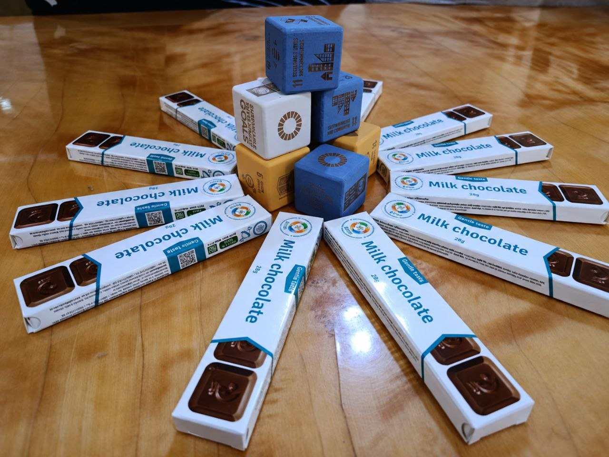
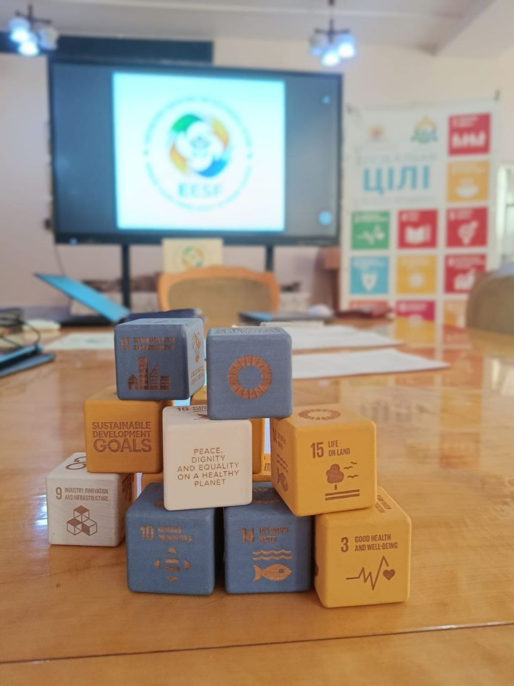

🇺🇦🌍 Day Two of the Erasmus+ CBHE EESF Consortium Meeting: From Discussing Ideas to Taking Joint Steps in Project Implementation!
On 6 November 2026, the second consortium meeting of the international Erasmus+ CBHE EESF project – Empowering Educators for Sustainable Future: Enhancing Teacher Training Capacity for Ukraine's Recovery – continues at Uzhhorod University.
🤝 The second day of the meeting is dedicated to coordinating project activities, monitoring progress, and ensuring the quality of planned activities. Partners are focusing on practical aspects of work package implementation, aligning joint tasks, and identifying priorities for further cooperation.

🌱 Particular importance is placed on coordination across the work packages, as a comprehensive approach will help integrate curriculum development, the enhancement of educators' professional competencies, and institutional changes within universities.
During the working discussions, partners are also addressing project timelines, expected outcomes, and coordination mechanisms necessary for the effective implementation of the project.
The second EESF consortium meeting represents an important milestone in our joint efforts, contributing to stronger partnerships, the alignment of strategic priorities, and laying the groundwork for future practical results.
🌍 Together, we are turning shared ideas into meaningful educational change, strengthening university capacities, and working towards a sustainable future for Ukraine!

Funded by the European Union. Views and opinions expressed are however those of the author(s) only and do not necessarily reflect those of the European Union or the European Education and Culture Executive Agency (EACEA). Neither the European Union nor EACEA can be held responsible for them.
#EESF #ErasmusPlus #EducationForSustainableDevelopment #SustainableDevelopment #TeacherEducation #UkraineRecovery #InternationalCooperation #ESD